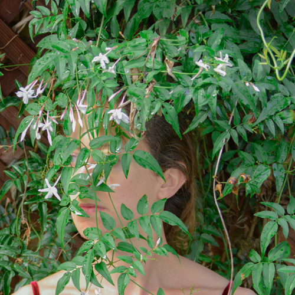

My name is Katie Loux. I’m taking this class as an introduction to graphic design, to provide a foundation for other design classes at CCSF. I work part-time as an art dealer specializing in tribal art, and I write for a magazine specializing in antique and contemporary textiles. This class will be helpful in our business, and with a potential career change to graphic designer. I loved all sections of the class, including HTML/CSS – that surprised me! I loved working with vector images in Illustrator and overcoming the challenges of using the pen tool. We covered a lot of ground at a fast pace, but I’m excited by what I’ve learned.